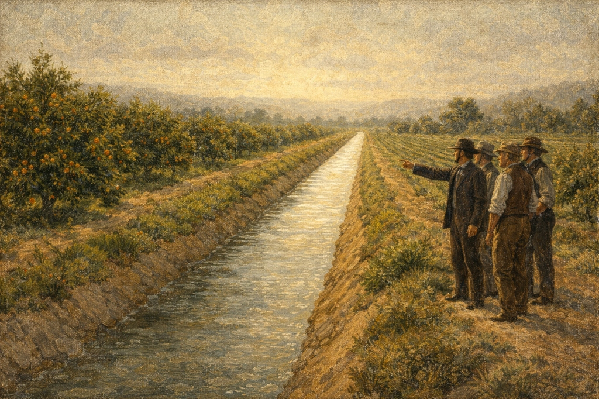
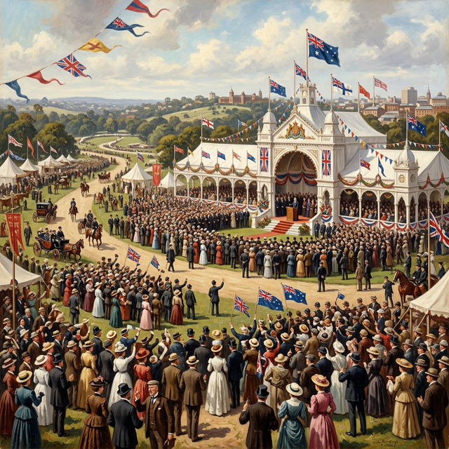
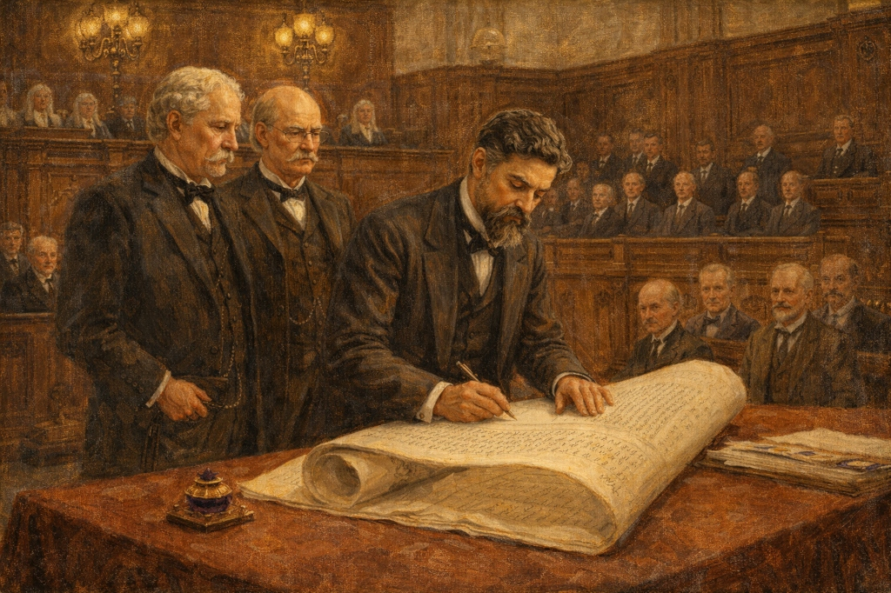

The Silver Tongue
Alfred Deakin was a brilliant writer, speaker, and thinker. He was the man who took everyone's ideas about Federation and turned them into real laws for a new nation.
A Melbourne Boy
Alfred Deakin was born in 1856 in the Melbourne suburb of Collingwood. He was a native-born Australian, which was still a rare and special thing during the gold rush era. His father had come from England, but Alfred had grown up breathing the air of Victoria his whole life.
From a young age, Alfred was a dreamer and a reader. He went to the Melbourne Church of England Grammar School and then the University of Melbourne to study law. Even as a student, he was known for his amazing ability to speak in front of crowds. His teachers called his voice his "silver tongue."
Finding His Voice
After university, Deakin became a journalist for a famous Melbourne newspaper called The Age. The newspaper's owner, David Syme, became his mentor. He taught Alfred about the big ideas of trade and economics that would shape a new nation.
In 1883, Deakin entered the Victorian Parliament. He was so good at speaking that he quickly became a minister. He worked hard to help farmers by building irrigation channels so that dry land could grow crops. He was proving that he was not just a talker — he was a man of action too!

The Federation Builder
When Henry Parkes made his famous speech about Federation, Deakin was one of the first to join the cause. While Barton was the movement's public face, Deakin was the quiet engine working backstage. He was so good at finding compromise that the other leaders trusted him to smooth out arguments between the colonies.
In 1900, Deakin traveled all the way to London with Barton to convince the British government to let Australia become its own nation. When they succeeded, the three men are said to have danced "hand in hand" with joy in their hotel room! It was one of the most important moments in Australian history.

Building the Nation's Laws
When Australia became a nation in 1901, Deakin was made the first Attorney-General. This is a very important job. He personally wrote the laws that created the High Court of Australia — the most powerful court in the country.
He served as Prime Minister three separate times. His governments introduced old-age pensions, which gave payments to elderly people who could no longer work. He also worked to create a powerful Royal Australian Navy, because he believed Australia needed to be able to defend itself.

A Brilliant but Sad Ending
In his final years, something very sad happened to Alfred Deakin. The man famous for his incredible memory and powerful speeches began to lose his mind. By 1916, he could no longer work, and his "silver tongue" was silent forever. He died in Melbourne in 1919.
His legacy was enormous. He wrote the laws that built Australia. He introduced pensions for the elderly and created our navy. He is remembered as one of Australia's greatest ever Prime Ministers — a man whose amazing mind helped create the country we live in today.
Deakin's Path to Power
Click the dates to see how the "Silver Tongue" shaped a nation.
1856
Born in Collingwood, Melbourne.
1883
Elected to the Victorian Parliament.
1891
Key delegate at the Federation Convention in Sydney.
1900
Travels to London to pass the Constitution Bill.
1903
Becomes Prime Minister for the first time.
1919
Alfred Deakin dies in Melbourne.
His Lasting Mark
Australia today still lives under laws that Alfred Deakin wrote. Our High Court, our navy, and our old-age pension system all started with him. He helped write the Constitution that guides how our government works.
He is sometimes forgotten compared to Barton or Parkes, but many historians call him the most important Australian of his time. He did not just dream of a great country — he sat down and wrote the laws that made it great.